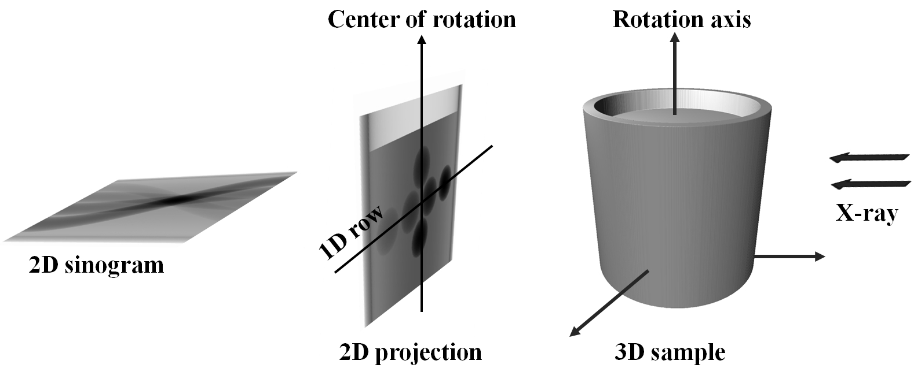
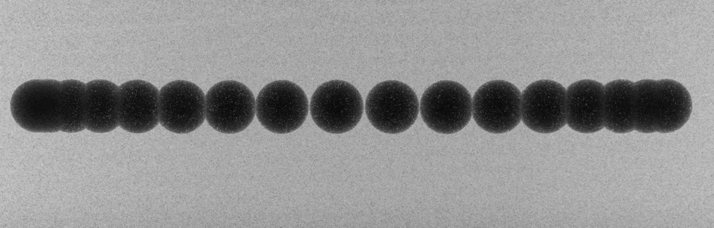
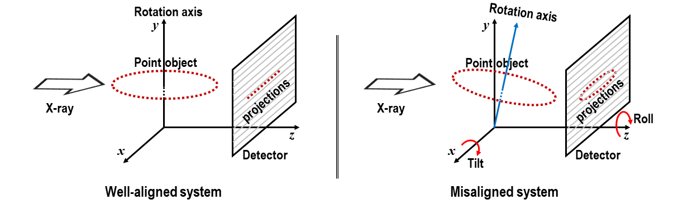
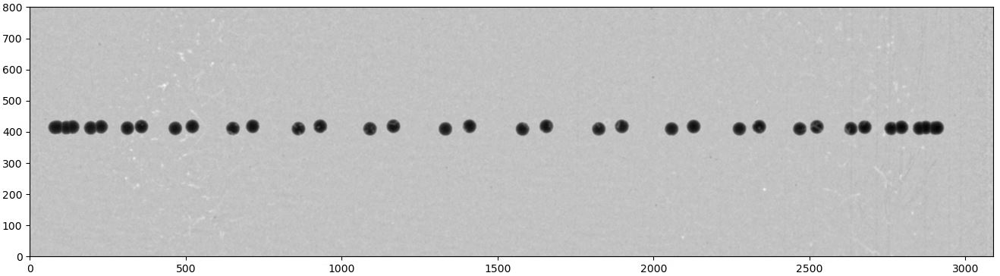
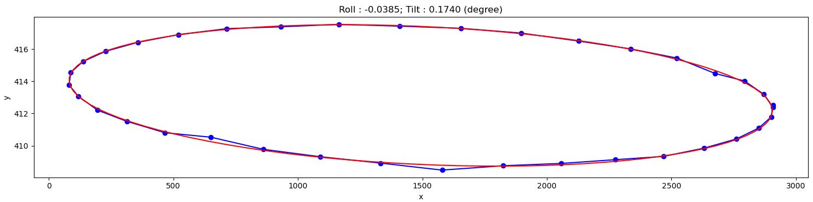
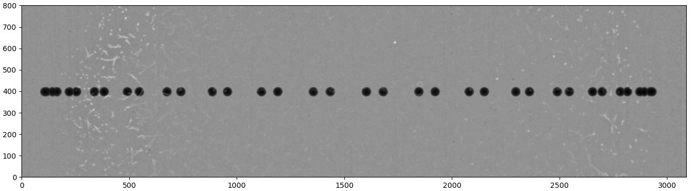
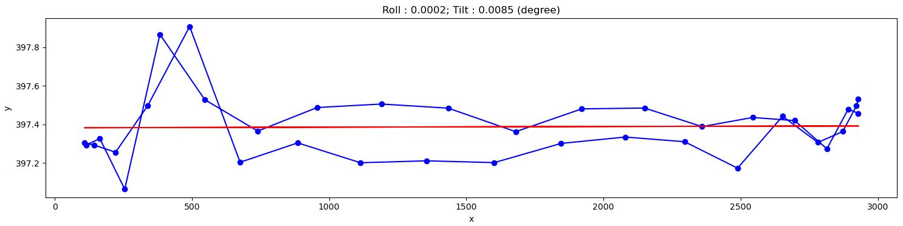
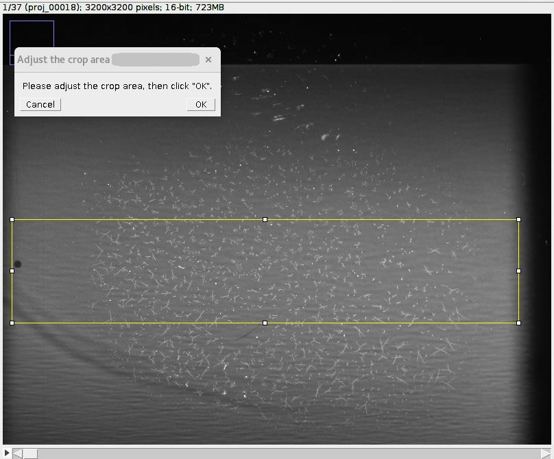

1.6. Alignment for a parallel-beam tomography system¶
Due to the parallelism of the penetrating X-rays, 2D projections can be divided into independent 1D projection rows.
Collecting 1D projections at a specific row angularly forms a sinogram, which is used to reconstruct a 2D slice of
an object (Fig. 1.6.1). To ensure the independence of 1D projections at each row, it is crucial to maintain
the rotation axis parallel to the imaging plane and perpendicular to each image row. This requirement is known as
tomography alignment. In a synchrotron-based tomography system, the high configurability in using different optics
magnifications and/or sample-detector distances often causes the rotation axis being misaligned with the imaging plane.
As the result, alignment adjustments are necessary for different tomography setups.

Fig. 1.6.1 Schematic of parallel-beam X-ray tomography.¶
The misalignment of a tomography system is identified by measuring the tilt and roll angle of the rotation axis
relative to the imaging plane. This is achieved by scanning a point-like object, such as a sphere offset from the
rotation axis, through a full rotation and tracking the trajectory of its center of mass, as illustrated in Fig. 1.6.2.
A similar approach can be employed using a needle by tracking the top of it through a full rotation.

Fig. 1.6.2 Overlay of projections of a sphere during a circular scan.¶
In a well-aligned system, the range of y-coordinates of points remains below 1 pixel, as depicted in Fig. 1.6.3.
If the system is misaligned, the y-coordinates of points will appear as an ellipse; where the roll angle corresponds to
the angle of the major axis, and the tilt is related to the ratio between the minor and major axes of the ellipse.

Fig. 1.6.3 Demonstration of a well-aligned tomography system and a misaligned one¶
This section demonstrates how to use methods available in Algotom to calculate the tilt and roll angle of the rotation
axis from projections of a sphere scanned over the range of [0, 360] degrees.
Load the raw data and the corresponding flat-field images:
importnumpyasnpimportscipy.ndimageasndiimportmatplotlib.pyplotaspltimportalgotom.io.loadersaveraslosaimportalgotom.util.calibrationascalibproj_path="/tomo/data/scan_00001/"flat_path="/tomo/data/scan_00002/"# If inputs are tif filesproj_files=losa.find_file(proj_path+"/*.tif*")flat_files=losa.find_file(flat_path+"/*.tif*")proj_data=np.asarray([losa.load_image(file)forfileinproj_files])flat=np.mean(np.asarray([losa.load_image(file)forfileinflat_files]),axis=0)# # If inputs are hdf files# hdf_key = "entry/data/data" # Change to the correct key.# proj_data = losa.load_hdf(proj_path, hdf_key)# (depth, height, width) = proj_data.shape# flat = np.mean(np.asarray(losa.load_hdf(flat_path, hdf_key)), axis=0)flat[flat==0.0]=np.mean(flat)have_flat=Truefit_ellipse=True# Use an ellipse-fit methodratio=1.0# To adjust the threshold for binarizationcrop_left=10crop_right=10crop_top=1000crop_bottom=1000figsize=(15,7)(depth,height,width)=proj_data.shapeleft=crop_leftright=width-crop_righttop=crop_topbottom=height-crop_bottomwidth_cr=right-leftheight_cr=bottom-top
For each projection, multiple preprocessing steps are applied to segment the sphere and determine its center of mass.
These steps include flat-field correction, background removal, binarization, and the removal of non-spherical objects,
as follows:
x_centers=[]y_centers=[]img_list=[]print("\n=============================================")print("Extract the sphere and get its center-of-mass\n")fori,imginenumerate(proj_data):# Crop image and perform flat-field correctionifhave_flat:mat=img[top:bottom,left:right]/flat[top:bottom,left:right]else:mat=img[top:bottom,left:right]# Denoisemat=ndi.gaussian_filter(mat,2)# Normalize the background.# Optional, should be used if there's no flat-field.mat=calib.normalize_background_based_fft(mat,5)threshold=calib.calculate_threshold(mat,bgr='bright')# Binarize the imagemat_bin0=calib.binarize_image(mat,threshold=ratio*threshold,bgr='bright')sphere_size=calib.get_dot_size(mat_bin0,size_opt="max")# Keep the sphere onlymat_bin=calib.select_dot_based_size(mat_bin0,sphere_size)nmean=np.sum(mat_bin)ifnmean==0.0:print("\n************************************************************************")print("Adjust threshold or crop the FOV to remove objects larger than the sphere!")print("Current threshold used: {}".format(threshold))print("**************************************************************************")plt.figure(figsize=figsize)plt.imshow(mat_bin0,cmap="gray")plt.show()raiseValueError("No binary object selected!")(y_cen,x_cen)=ndi.center_of_mass(mat_bin)x_centers.append(x_cen)y_centers.append(height_cr-y_cen)img_list.append(mat)print(" ---> Done image: {}".format(i))x=np.float32(x_centers)y=np.float32(y_centers)img_list=np.asarray(img_list)img_overlay=np.min(img_list,axis=0)
The coordinates of the center of mass of the sphere are used to calculate the till and roll either
using an ellipse-fit method or a linear-fit method.
# ==============================================================================deffit_points_to_ellipse(x,y):iflen(x)!=len(y):raiseValueError("x and y must have the same length!!!")A=np.array([x**2,x*y,y**2,x,y,np.ones_like(x)]).Tvh=np.linalg.svd(A,full_matrices=False)[-1]a0,b0,c0,d0,e0,f0=vh.T[:,-1]denom=b0**2-4*a0*c0msg="Can't fit to an ellipse!!!"ifdenom==0:raiseValueError(msg)xc=(2*c0*d0-b0*e0)/denomyc=(2*a0*e0-b0*d0)/denomroll_angle=np.rad2deg(np.arctan2(c0-a0-np.sqrt((a0-c0)**2+b0**2),b0))ifroll_angle>90.0:roll_angle=-(180-roll_angle)ifroll_angle<-90.0:roll_angle=(180+roll_angle)a_term=2*(a0*e0**2+c0*d0**2-b0*d0*e0+denom*f0)*(a0+c0+np.sqrt((a0-c0)**2+b0**2))ifa_term<0.0:raiseValueError(msg)a_major=-2*np.sqrt(a_term)/denomb_term=2*(a0*e0**2+c0*d0**2-b0*d0*e0+denom*f0)*(a0+c0-np.sqrt((a0-c0)**2+b0**2))ifb_term<0.0:raiseValueError(msg)b_minor=-2*np.sqrt(b_term)/denomifa_major<b_minor:a_major,b_minor=b_minor,a_majorifroll_angle<0.0:roll_angle=90+roll_angleelse:roll_angle=-90+roll_anglereturnroll_angle,a_major,b_minor,xc,yc# ==============================================================================# Calculate the tilt and roll using an ellipse-fit or a linear-fit methodiffit_ellipseisTrue:(a,b)=np.polyfit(x,y,1)[:2]dist_list=np.abs(a*x-y+b)/np.sqrt(a**2+1)dist_list=ndi.gaussian_filter1d(dist_list,2)ifnp.max(dist_list)<1.0:fit_ellipse=Falseprint("\nDistances of points to a fitted line is small, ""Use a linear-fit method instead!\n")iffit_ellipseisTrue:try:result=fit_points_to_ellipse(x,y)roll_angle,major_axis,minor_axis,xc,yc=resulttilt_angle=np.rad2deg(np.arctan2(minor_axis,major_axis))exceptValueError:# If can't fit to an ellipse, using a linear-fit method insteadfit_ellipse=Falseprint("\nCan't fit points to an ellipse, using a linear-fit method instead!\n")iffit_ellipseisFalse:(a,b)=np.polyfit(x,y,1)[:2]dist_list=np.abs(a*x-y+b)/np.sqrt(a**2+1)appr_major=np.max(np.asarray([np.sqrt((x[i]-x[j])**2+(y[i]-y[j])**2)foriinrange(len(x))forjinrange(i+1,len(x))]))dist_list=ndi.gaussian_filter1d(dist_list,2)appr_minor=2.0*np.max(dist_list)tilt_angle=np.rad2deg(np.arctan2(appr_minor,appr_major))roll_angle=np.rad2deg(np.arctan(a))print("=============================================")print("Roll angle: {} degree".format(roll_angle))print("Tilt angle: {} degree".format(tilt_angle))print("=============================================\n")
Show the results:
# Show the resultsplt.figure(1,figsize=figsize)plt.imshow(img_overlay,cmap="gray",extent=(0,width_cr,0,height_cr))plt.tight_layout(rect=[0,0,1,1])plt.figure(0,figsize=figsize)plt.plot(x,y,marker="o",color="blue")plt.title("Roll : {0:2.4f}; Tilt : {1:2.4f} (degree)".format(roll_angle,tilt_angle))iffit_ellipseisTrue:# Use parametric form for plotting the ellipseangle=np.radians(roll_angle)theta=np.linspace(0,2*np.pi,100)x_fit=(xc+0.5*major_axis*np.cos(theta)*np.cos(angle)-0.5*minor_axis*np.sin(theta)*np.sin(angle))y_fit=(yc+0.5*major_axis*np.cos(theta)*np.sin(angle)+0.5*minor_axis*np.sin(theta)*np.cos(angle))plt.plot(x_fit,y_fit,color="red")else:plt.plot(x,a*x+b,color="red")plt.xlabel("x")plt.ylabel("y")plt.tight_layout()plt.show()

Fig. 1.6.7 Overlay of projections of a sphere for checking.¶

Fig. 1.6.8 Showing the result of finding the tilt and roll.¶
From the given results, we can adjust the rotation axis or the detector system accordingly. Note that the calculated
angles are based only on input images, so the sign of the angles does not reflect the true geometry of a
tomography system. Using information such as the direction of rotation when scanning spheres and/or camera orientation,
we can correctly identify the sign of these angles. After the adjustment, calculation results should be as follows:

Fig. 1.6.9 Overlay of projections of a sphere after alignment.¶

Fig. 1.6.10 Result of finding the tilt and roll after alignment.¶
The above routine performs very well in practice. However, if the projection images are of low quality due to blobs on
the scintillator or optics system, an additional cleaning step for image processing (using some functions in the
scikit-image library) can be included as follows:
fromskimageimportmeasure,segmentationdefremove_non_round_objects(binary_image,ratio_threshold=0.9):""" To clean binary image and remove non-round objects """binary_image=segmentation.clear_border(binary_image)binary_image=ndi.binary_fill_holes(binary_image)label_image=measure.label(binary_image)properties=measure.regionprops(label_image)mask=np.zeros_like(binary_image,dtype=bool)# Filter objects based on the axis ratioforpropinproperties:ifprop.major_axis_length>0:axis_ratio=prop.minor_axis_length/prop.major_axis_lengthifaxis_ratio>ratio_threshold:mask[label_image==prop.label]=True# Apply mask to keep only round objectsfiltered_image=np.logical_and(binary_image,mask)returnfiltered_image# ...# Binarize the imagemat_bin0=calib.binarize_image(mat,threshold=ratio*threshold,bgr='bright')# Clean the imagemat_bin0=remove_non_round_objects(mat_bin0)sphere_size=calib.get_dot_size(mat_bin0,size_opt="max")# Keep the sphere only# ...
The complete script and its commandline user interface (CLI) version are available
here.
If users prefer an interactive way of assessing tomographic alignment as shown below,
the ImageJ macros can be downloaded from
here.

Fig. 1.6.11 Interactive approach for tomography alignment using ImageJ macro.¶